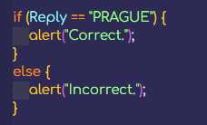

If Statements
So far I've done the internal and external setup along with some simple comparisons using the comparison operators. For example, 8 > 9; (false) would be a simple comparison. However, I haven't looked into what I can actually do with both answers right and wrong. But that's where if statements come in and I've already had a go at these in college and they're pretty straight forward and easy to get the hang of.
Basically if the answer is this then do something, if it's not this then do something else in a very simple concept. And that's where these if statements come in.
In college I did something like [var Reply;] which just creates a variable called Reply with no value, then I did [Reply = prompt("What is the capital of Czechia (Czech Republic)?").toUpperCase();] which will give the user a prompt on the page load and have the question that is inside the String. Upon the user entering any input it will then set that input to the Reply variable and make it all upper case.
Below is the if statement I used. If the user got the correct answer being "Prague" (which gets capitalised), then an alert will pop up saying "Correct.". However, anything else then they would get a different alert which says "Incorrect.".
I'll get around to incorporating what I learn in college here as well as my self learning due to me currently learning more in college due to illness but this will change soon.